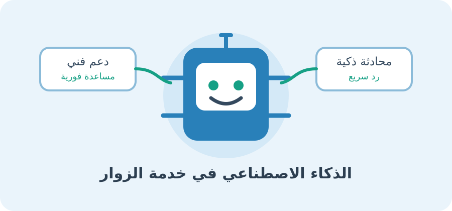

الاسم: أية محمد السيد كمال | الرقم الجامعي: 2503430
أصبح الذكاء الاصطناعي من أهم التقنيات التي ساهمت في تطوير المواقع الإلكترونية وتحسين الخدمات التي تقدمها للمستخدمين. ومع زيادة الاعتماد على الإنترنت في التعليم والتجارة والخدمات الحكومية والمصرفية أصبحت المؤسسات بحاجة إلى وسائل حديثة تساعدها على الرد السريع على استفسارات الزوار وتقديم الدعم الفني بصورة مستمرة وفعالة.
في الماضي، كان المستخدم يضطر إلى الانتظار حتى يتواصل معه أحد موظفي خدمة العملاء للحصول على إجابة عن سؤاله أو حل مشكلة تواجهه. أما في الوقت الحالي، فقد أتاحت تقنيات الذكاء الاصطناعي إمكانية الرد الفوري على كثير من الاستفسارات من خلال روبوتات المحادثة والمساعدات الافتراضية وأنظمة تحليل اللغة الطبيعية.
وتعتمد المواقع الحديثة على هذه التقنيات لتوفير تجربة استخدام أفضل، وتقليل وقت الانتظار، ومساعدة الموظفين على إنجاز مهامهم بكفاءة أكبر. كما تتيح بعض الأنظمة تحليل المشكلات المتكررة واكتشاف احتياجات المستخدمين، مما يساعد المؤسسات على تطوير خدماتها باستمرار.
ويهدف هذا البحث إلى توضيح مفهوم استخدام الذكاء الاصطناعي في خدمة زوار المواقع الإلكترونية والتعرف على أهم الأدوات المستخدمة، وبيان دورها في تحسين الدعم الفني، مع توضيح مزاياها والتحديات المرتبطة بها.

الذكاء الاصطناعي هو أحد فروع علوم الحاسوب الذي يهتم بتطوير أنظمة تستطيع تنفيذ مهام تتطلب عادةً قدرًا من الذكاء البشري، مثل فهم اللغة، وتحليل البيانات، والتعرف على الأنماط، وتقديم الإجابات المناسبة. وفي مجال المواقع الإلكترونية، يُستخدم الذكاء الاصطناعي لتسهيل التواصل بين الموقع والزائر من خلال أنظمة قادرة على فهم الأسئلة المكتوبة بلغة طبيعية.
يساهم الذكاء الاصطناعي في تطوير الدعم الفني من خلال تشخيص المشكلات التقنية، وتقليل وقت الانتظار، وتنظيم طلبات الدعم، ومساعدة موظفي الدعم الفني، وتحليل آراء المستخدمين.
يحقق الذكاء الاصطناعي فوائد عديدة مثل السرعة والتوافر المستمر وزيادة الكفاءة، إلا أنه يواجه بعض التحديات مثل احتمال تقديم معلومات غير دقيقة، وحماية البيانات والخصوصية، وصعوبة فهم بعض الاستفسارات، والحاجة إلى التدخل البشري وتحمل التكلفة.
| الأداة | الوظيفة الأساسية | مجال الاستخدام |
|---|---|---|
| روبوتات المحادثة (Chatbots) | التفاعل المباشر والرد على الأسئلة الشائعة | المتاجر الإلكترونية وخدمة العملاء |
| معالجة اللغة الطبيعية | فهم الصياغات المختلفة للأسئلة | أنظمة الدعم الفني والاستعلامات |
| المساعدات الافتراضية | توجيه المستخدم بخطوات متتابعة | المواقع الحكومية والتعليمية |
| أنظمة البحث الذكي | فهم معنى البحث واستخراج المعلومات المناسبة | مراكز المعرفة والمواقع الخدمية |
يتضح مما سبق أن الذكاء الاصطناعي أصبح أداة مهمة لتطوير المواقع الإلكترونية وتحسين خدمات الدعم الفني. وأفضل استخدام للذكاء الاصطناعي ليس استبدال العنصر البشري بصورة كاملة، بل الجمع بين سرعة الأنظمة الذكية وخبرة الموظفين، للوصول إلى خدمة إلكترونية أكثر كفاءة وموثوقية تلبي احتياجات الزوار وتواكب التطور التكنولوجي.